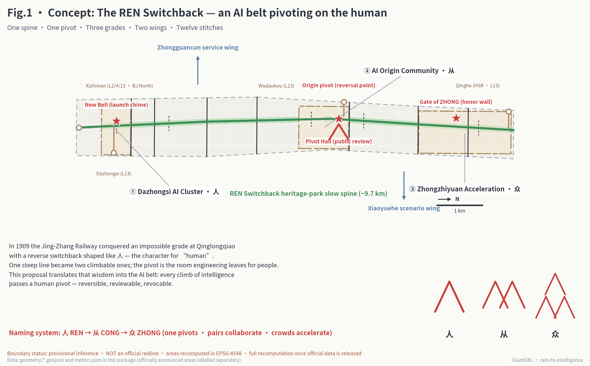
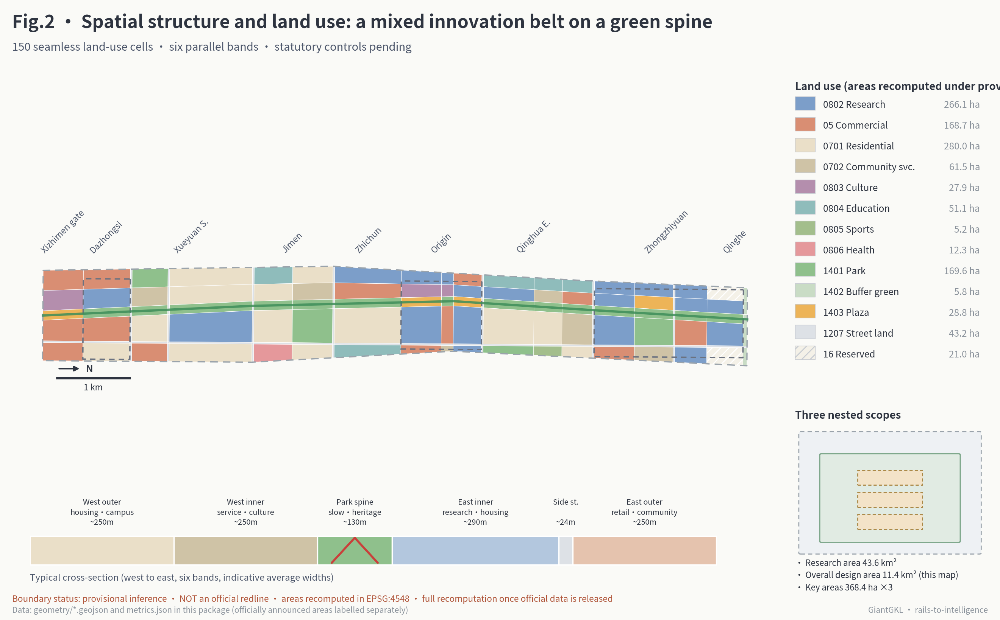
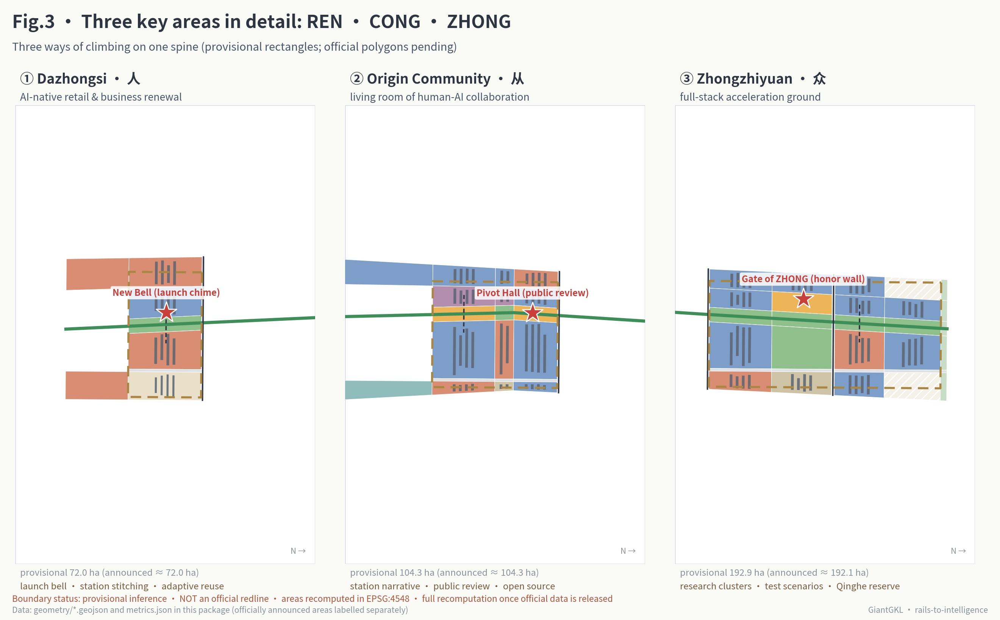
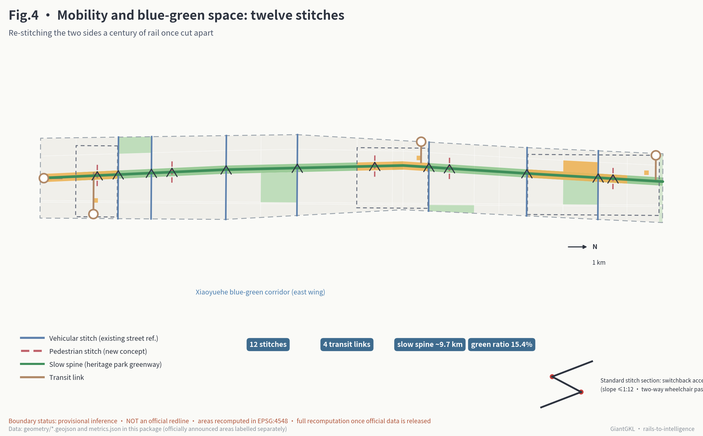
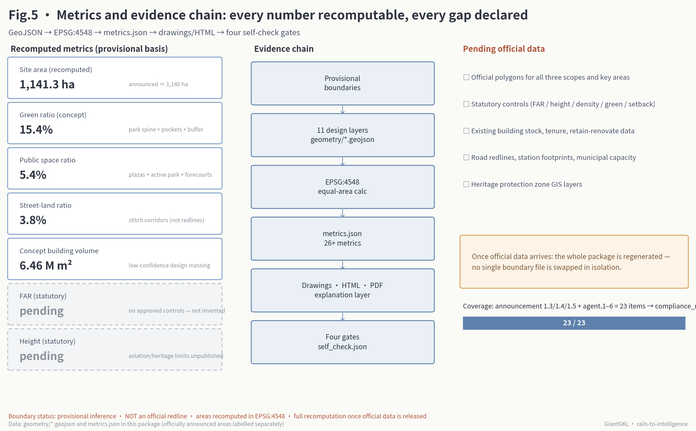

Xizhimen gateway · quarterly historian review; human narration at any time.
Fig.1 · Overview Map: Overall Concept and Evidence Chain
Every element of the one spine, one pivot, three segments, two wings, and twelve clasps comes from this package's GeoJSON; the lower-right corner derives the 人 → 从 → 众 naming and Logo construction. Areas and status labels match metrics.json.

Park spine and blue-greenDazhongsi segment (人)Origin Community segment (从)Zhongzhiyuan segment (众)Pilgrimage landmarksREN-clasp crossings
Fig.2 · Three-Level Scope, Spatial Structure, and Land-Use Zoning
The Coordinated Research Area (~43.6 km²) answers direction; the Overall Design Area (~11.4 km²) answers the roadbed; the Key-Area Detailed Design Area (~368.4 ha) answers the station yards. One spine, six bands, and eighteen segments generate 150 topologically seamless land-use cells — sixty percent retain-and-upgrade, thirty percent mixed renovation and infill.

Fig.3 · Three Key Areas, Three Climbs
The three key areas share one spine and carry the three climbs of 人 – 从 – 众; each covers positioning, spatial structure, building renewal, transport and slow mobility, public space, AI scenarios, and implementation risk. Provisional extents are rectangular placeholders; all conclusions are conceptual recommendations.

Fig.4 · Mobility and Blue-Green Public Space
Arrive by rail, distribute by slow mobility: four rail nodes each get a feeder passage and a station plaza; the ~9.7 km slow-mobility spine is the "main line" and the twelve REN clasps are its "turnouts", at ~800 m spacing, reconnecting the two sides the railway cut apart for a century. Every clasp ships the zigzag accessible ramp (no steeper than 1:12).

AI Scenarios: 12 Cards × Gradient-Graded Governance
Every card carries a gradient grade (G1 instant human takeover / G2 periodic review + one-touch degradation / G3 closed test segments) and a REN fallback plan (when to degrade to human, how to exit, who reviews). Three bottom lines: no indiscriminate facial recognition, a preserved human channel, a visible exit. Cards 02, 03, and 10 are the industry testing and validation scenarios.
Zhongzhiyuan loop · closed segment + safety officer; any complaint halts the line.
Jimen segment · speed- and time-limited; exit = recall to holding area.
East of Xueyuan Rd · navigation and booking only, no diagnosis; staffed window always present.
Origin Community · licensing always routes to humans; records deletable same day.
North Xueyuan South Rd · monthly review; failure defaults to always-on safe mode.
Dazhongsi · unpowered ramps; route recommendation can be switched off.
Origin Community · sessions auditable by human observers; records enter the public knowledge base.
Station quarter · dual heritage review; no visitor face capture.
Qinghua East Rd segment · every experiment filed; physical cut-off switch within reach.
North Dazhongsi · dual informed consent; reverts to purely human visits at any time.
Zhongzhiyuan · data archived or deleted after events; outputs default to open source.
Fig.5 · Metrics Recomputation and Evidence Chain
Every number recomputable, every gap stated: GeoJSON → EPSG:4548 → metrics.json → drawings/HTML → four self-check gates. Statutory FAR and building height stay in the unknown state with registered recomputation paths.

Sources and Assumptions
Formal conclusions use only the official announcement, the taskbook excerpt, and national standard snapshots registered as formal-ready; historical and case facts are multi-source-checked and registered in sources.json. This page loads no CDN, remote tiles, external scripts, external fonts, APIs, or iframes.
Source boundary
The official announcement and taskbook are the first basis; provisional boundaries are provisional-only; citations for Jing-Zhang history, Qinghuayuan Station, Dazhongsi, and innovation-district cases are registered with provenance and confidence in sources.json.
sources.json · standard_matrix.json · design_depth_matrix.json · compliance_matrix.json
Assumptions and pending data
Official polygons, regulatory conditions, building and tenure data, road redlines, municipal capacity, heritage GIS — until these arrive, the corresponding conclusions remain conceptual recommendations; itemized entries live in the assumptions register.
assumptions.json · self_check.json · metrics.json (unknown items)